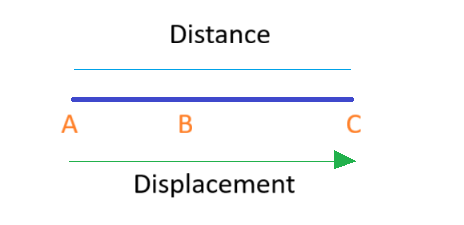
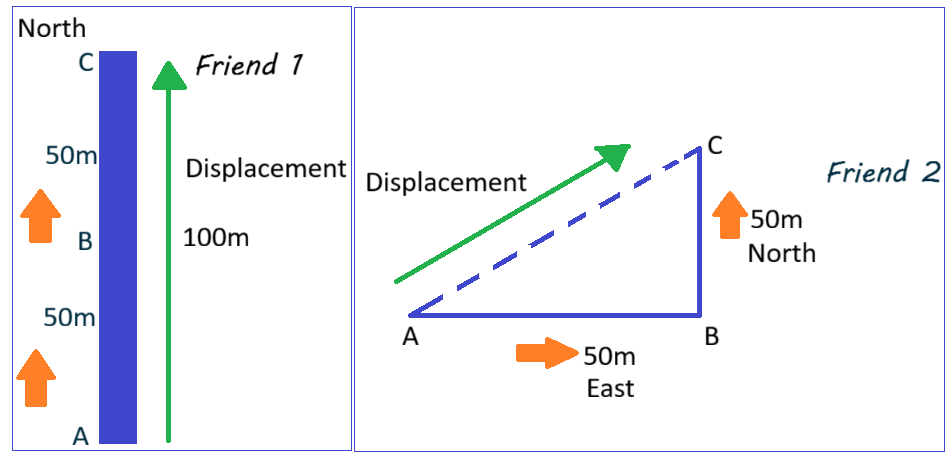

3.2 Position, Displacement and Distance
To describe motion, we need to know where an object is located. Position tells us the location of an object relative to a chosen reference point.
Distance
Distance is the total length of the path traveled by an object, irrespective of direction.
It is a scalar quantity and is always positive.
- Example: Walking around a track once might cover 400 m of distance.
Displacement
Displacement is the change in position of an object, measured from the initial point to the final point along a straight line. It is a vector quantity, having both magnitude and direction.
- Example: If you walk 400 m around a track and end up at the starting point, your displacement is 0 m.
Visual Representation
Consider a person moving from point A → B → C along a straight path:
- Total distance traveled: length of path A→B + B→C
- Displacement: straight line from A to C, with direction
Examples of Distance and Displacement
-
East-West Movement:
A person walks 5 m east, then 3 m west. Distance traveled: 5 m + 3 m = 8 m
Displacement: 5 m – 3 m = 2 m eastThis demonstrates vector resolution: displacement accounts for direction, while distance does not.
-
Double Distance, Zero Displacement:
A runner completes one lap around a circular track of 400 m. If they run two laps, then Distance traveled: 400 m × 2 laps = 800 m
Displacement: 0 mThe runner ends up at the starting point, so displacement is zero, even though the total distance is large.
-
Same Distance, Different Displacement:
Two friends walk 100 m each. One walks straight north; the other walks 50 m east then 50 m north. Distance traveled: Both = 100 m
Displacement: First = 100 m north; Second = √(50² + 50²) = 70.7 m northeast Distance is scalar and the same, but displacement depends on the path’s direction.
Formulas
- Distance: sum of the lengths of the path traveled (scalar)
- Displacement: \( \vec{d} = \vec{x}_{\text{final}} - \vec{x}_{\text{initial}} \) (vector)
Practice Questions
- A person walks 3 m east, then 4 m north. Find the total distance traveled and the displacement.
- A car moves 5 km north and then 12 km south. Determine the displacement.
- Explain why displacement can be zero even if distance traveled is not zero.